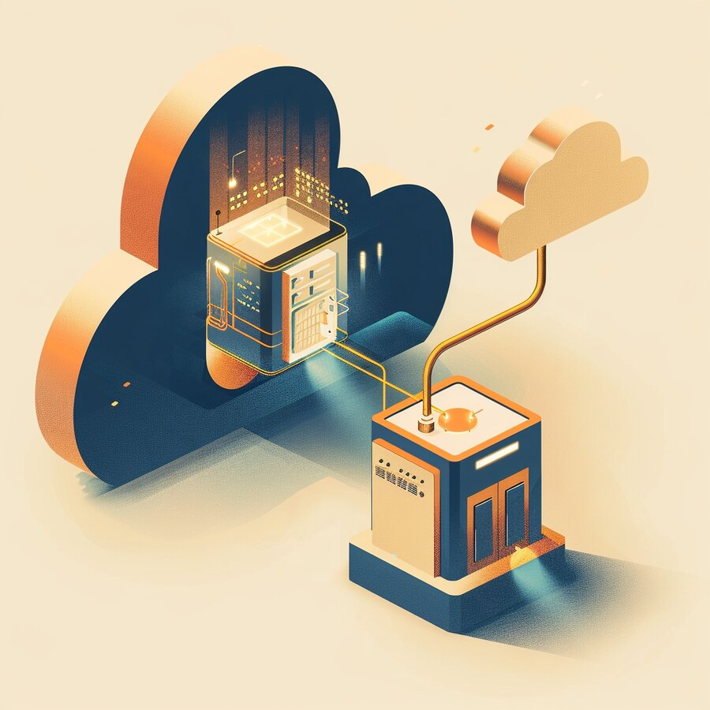
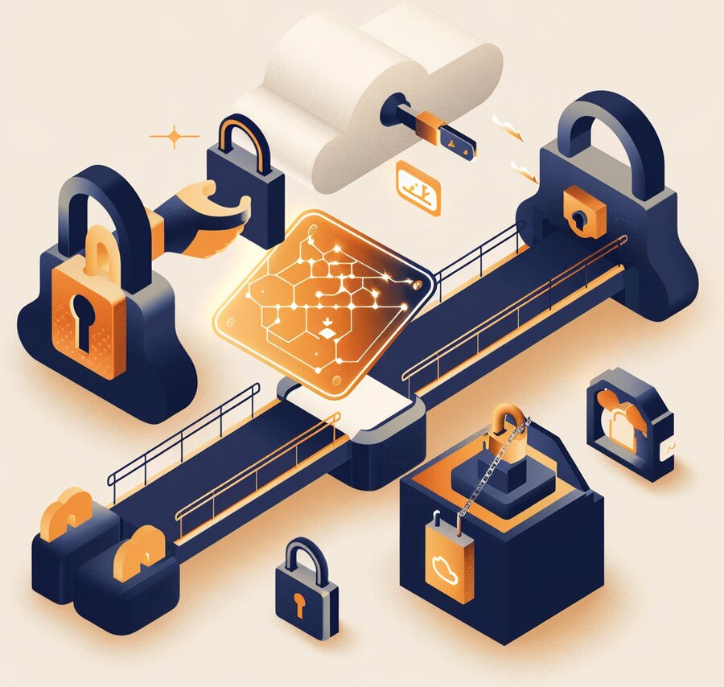
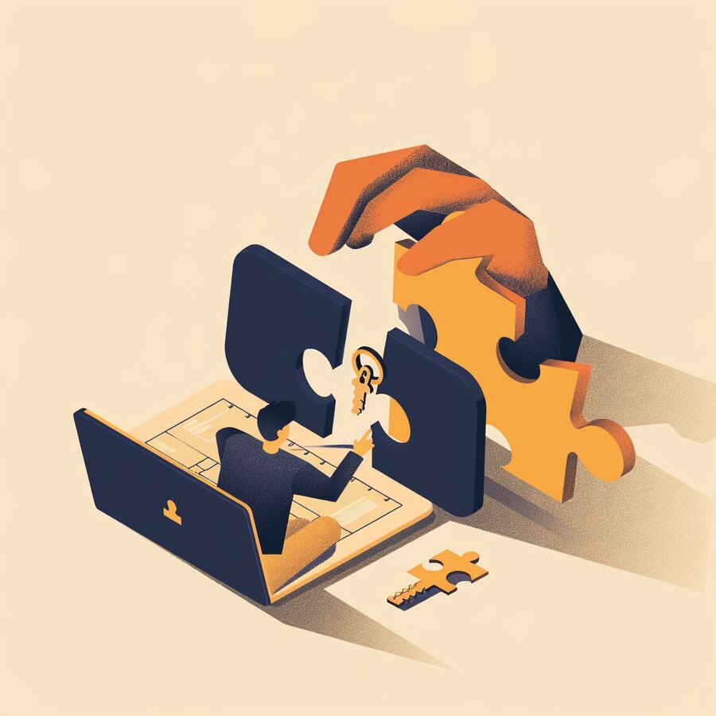

| IN THIS ISSUE |
AI & INTELLIGENCE Record AI capex — and a market that finally blinked | DATA Snowflake goes native inside Oracle’s cloud | APPLICATIONS Freshworks buys an AI that investigates outages | CLOUD Google’s TPUs land on a rival’s cloud |
CS
Get it in your inbox
Subscribe free — a new edition weekly |
INFRASTRUCTURE Intel buys its way into full-stack quantum | NETWORK Cisco hands the network to agents | IDENTITY & ACCESS A poisoned AI extension became an SSH backdoor | CYBERSECURITY The largest hack in history ran through one laptop |
The biggest technology deal of the year is not about models, chips or clouds — it is about the wiring between them. On November 2, Marvell agreed to acquire optical-components maker Lumentum in an all-stock deal valuing it at roughly $115 billion (an implied enterprise value of about $1,132 a share, a ~24% premium). As AI data centers scale to hundreds of thousands of chips, the bottleneck — and the value — is shifting from the processors to the optical interconnects that move data between them at the speed of light. Marvell, a custom-silicon and interconnect company, is buying the photonics specialist to own more of that connective layer; the two pitch a combined addressable market near $550 billion and expect the deal to add to earnings in year one, closing in 2028.
For a CEO, the signal is that the “boring” infrastructure beneath AI — optics, interconnects, the links between chips — is now where competitive advantage, pricing power and consolidation are happening, and it is concentrating into fewer hands. If you build AI infrastructure, or buy it as a service, the supply, cost and innovation pace of the components under your compute increasingly depend on a shrinking set of suppliers.
Our read. Treat interconnect and optics as a strategic sourcing variable, not a datasheet footnote. Ask your infrastructure and cloud providers about their photonics roadmaps and second sources, and watch this merger the way you would any supplier consolidation that could reprice a critical input to your business. The models get the headlines; increasingly, the wiring gets the margins — and whoever owns the wiring has leverage over everyone building on top.
| 1 AI & INTELLIGENCE | AI ECONOMICS · EARNINGS |
Earnings week turned the AI build-out into a referendum. Combined Q3 capital spending by Amazon, Alphabet, Meta and Microsoft hit a record of roughly $201.9 billion, up about $37 billion from the prior quarter. Microsoft’s capex more than doubled year over year to about $39.4 billion (Azure grew ~40%), and it quietly extended the assumed useful life of its data centers from 15 to 25 years while guiding full-year spend near $175 billion. Alphabet lifted 2026 capex guidance to $195–205 billion; Amazon’s AWS grew ~39% and its chief said spending will rise again in 2027. The results were strong — and yet the market, newly worried about when the returns arrive, sold parts of the complex off.
Our read. The question has shifted from “how fast can you spend?” to “when does this pay back?” — and that reframing matters for buyers, not just investors. Two takeaways. First, your AI vendors are financing enormous, long-dated bets; watch their free cash flow and the accounting choices (like extending asset lives) that flatter it, because pricing and priorities can shift when the market’s patience does. Second, model your own AI spend the same way you’re now asking them to: tie it to a return you can measure, stage it against milestones, and keep the option to slow down. The build-out is real. So is the day the bill comes due.
| 2 DATA | CROSS-CLOUD DATA · INTEGRATION |
At Oracle AI World, Oracle and Snowflake announced that the Snowflake AI Data Cloud will run as a first-party, native service inside Oracle Cloud Infrastructure (OCI) — with Oracle handling pricing, discounts and billing (payable with Oracle Universal Credits) and the service running next to Oracle’s own applications and databases. Supported sources include Oracle Fusion apps, NetSuite, Autonomous AI Database, MySQL HeatWave and Oracle NoSQL. The pitch is to cut data movement, latency and egress — letting enterprises analyze Oracle data in Snowflake without hauling it across clouds. One caveat analysts flagged: data pulled into Snowflake still lives there as a copy, so duplication isn’t eliminated.
Our read. The era of picking one data platform and one cloud is giving way to cross-vendor plumbing, where your analytics engine runs natively inside someone else’s cloud to kill the cost and latency of moving data. For data leaders that’s mostly good — less egress, lower latency, fewer brittle pipelines — but it raises the governance questions that matter most: where does each copy of your data physically live, who bills and who can access it, and can you still leave? Push for clarity on data residency, lineage and exit terms before you lean in. Convenience that quietly multiplies copies of your data is a governance problem wearing an integration costume.

| 3 APPLICATIONS | ITSM · AI OPERATIONS · M&A |
Freshworks acquired Robusta Dev, an Israeli startup (maker of the open-source HolmesGPT) whose AI investigates technology disruptions, finds the root cause and recommends fixes. Freshworks will fold those capabilities into Freshservice and connect them to FireHydrant, its incident-management acquisition — so that when something breaks, an AI assembles the investigation, points at the likely cause and proposes a remediation, with engineers approving changes before they reach live systems. Terms weren’t disclosed; the founding team joins Freshworks. It follows a run of Freshworks deals (FireHydrant, Torii) aimed at AI-native IT operations.
Our read. AI in the enterprise is moving from answering questions to running operations — here, the unglamorous but expensive work of diagnosing why systems fail. For IT and operations leaders that’s a real efficiency prize (faster mean-time-to-resolution, less 3 a.m. firefighting), but it changes the control question: an AI that recommends — or executes — fixes needs the same guardrails as any privileged operator. Keep a human approval gate for changes that touch production, log what the AI did and why, and scope its access tightly. Let AI investigate freely; make it ask permission before it acts. The goal is a faster incident response, not an autonomous one you can’t audit.
| 4 CLOUD | AI COMPUTE · MULTI-CLOUD |
Oracle and Google announced that Google’s TPUs will run on Oracle Cloud Infrastructure — the first time Google’s AI accelerators will be offered on a competing hyperscale cloud. The multi-year, multi-gigawatt deal brings Google’s eighth-generation chips (TPU 8t for training, TPU 8i for inference) and software stack to OCI starting in 2027, with Oracle supplying the data centers, power, cooling and networking and Google supplying the accelerators. Neither disclosed chip counts or financials. The strategic subtext: enterprises and clouds alike want to hedge their dependence on Nvidia and secure scarce AI capacity wherever they can find it.
Our read. Two rivals cooperating is a tell: AI compute is scarce enough, and Nvidia’s position dominant enough, that even hyperscalers are diversifying their silicon and renting each other’s. For buyers, that is good news — more accelerator choice (TPUs alongside Nvidia and AMD), potentially better pricing, and a path to avoid a single point of failure in your AI stack. Capture it deliberately: design workloads to be portable across accelerators where you can, treat chip choice as a sourcing lever rather than a default, and ask your cloud providers which silicon options they’ll actually offer. The monoculture under AI is starting to crack; a smart buyer widens the crack.

| 5 INFRASTRUCTURE & HYBRID CLOUD | QUANTUM · M&A |
Intel agreed to acquire Classiq, a Tel Aviv quantum-software company, for a reported $2.2–2.3 billion — the largest quantum-computing acquisition to date. Classiq’s platform automates turning high-level models into quantum circuits and works across qubit types; Intel plans to pair it with its silicon spin-qubit hardware, cryogenic control electronics and chip manufacturing to become a full-stack quantum provider. Intel says it will keep Classiq’s existing integrations with other quantum platforms, and the deal is expected to close in the first half of 2027. It is a notable signal that the quantum race is being fought on software and tooling, not just physical qubits.
Our read. Practical quantum computing is still years away for most enterprises, so this is a watch-and-prepare item, not a buy-now one — but the direction matters. Whoever makes quantum hardware programmable (the software layer Classiq sells) will shape who can actually use it, the way compilers and frameworks decided winners in classical and AI computing. For leaders, two modest moves: track quantum’s progress as a medium-term disruptor to cryptography and certain hard optimization problems, and start your post-quantum cryptography planning now, because the timeline that matters for your data’s secrecy is set by when it must stay secret, not by when quantum arrives.
| 6 NETWORK & CONNECTIVITY | AGENTIC OPS · PARTNERS |
At Cisco Partner Summit in Vancouver, Cisco leaned hard into agent-run network operations. It made Cisco IQ for Partners generally available, updated its Cisco 360 Partner Program, introduced a Model Foundry drawing on its networking, security and operations data, and — the quietly important part — began adding MCP servers to its networking platforms, giving AI agents a standardized way to reach live network data for troubleshooting, reporting and operations. Cisco is routing this through its channel (partners drive ~90% of its bookings), reframing annual “health checks” as continuous, AI-driven risk assessment and managed operations.
Our read. The network is becoming something agents operate, not just something engineers configure — and a standard protocol (MCP) that lets AI read and act on live network state is both powerful and a new, privileged attack surface. The upside is real: faster diagnosis, continuous assurance, less manual toil. The caution is the same one every agentic launch raises — whoever (or whatever) can reach that MCP door can see and touch your network. Scope agent access tightly, require approval for changes that alter routing or security posture, log every agent action, and treat the agent’s credentials as crown-jewel access. Let agents run the toil; keep humans on the switch for anything that can take the network down.
| 7 IDENTITY & ACCESS | SOFTWARE SUPPLY CHAIN · DEV TOOLS |
A tampered build of Anthropic’s Claude Code extension (version 2.1.313) sat on Cursor’s extension marketplace for about 11 hours on October 29 and quietly installed a persistent SSH backdoor on developers’ machines — running when the extension loaded, with no need to actually use the tool. Cursor says up to 5,000 users were affected; crucially, uninstalling may not remove it, because the payload drops standalone scripts that keep running. Cursor pulled the version, shut down its VS Code marketplace as a precaution, found no other tampered extensions, and told users to update to 2.1.314. Developers who ran Claude Code from the terminal or used Microsoft’s VS Code were not affected.
Our read. This is an identity-and-access story dressed as a supply-chain one: installing an extension grants it the trust — and the SSH keys — of a developer who usually holds privileged access to source code and production. Developer machines and the tools on them are among your highest-value identities, and the AI coding boom has made extensions a fast-moving, under-governed attack surface. Treat dev-tool marketplaces as untrusted supply chain: pin and vet extension versions, restrict what can auto-run, store SSH keys in hardware or short-lived form, monitor developer endpoints like the crown jewels they are, and assume that “uninstall” is not the same as “remediated” after a compromise. The convenience of one-click AI tooling is also a one-click path to your keys.

| 8 CYBERSECURITY | CRYPTO HEIST · EXPLOITED VULNS |
In the largest crypto theft — and the largest hack — on record, North Korea-linked group TraderTraitor stole roughly $6.3 billion from Binance on October 29, moving most of it in about 20 minutes; the FBI confirmed North Korea’s involvement. The entry point was mundane and familiar: attackers compromised an engineer’s laptop, then reached Binance’s hot-wallet signing infrastructure — turning one endpoint into the keys to the exchange. It dwarfs the $1.5B Bybit hack of early 2025 by roughly four times; partners froze about $3 billion, and Binance says user funds are safe and it will cover losses.
It capped a brutal week for defenders. CISA added a VMware ESX insufficient-logging flaw — CVE-2026-41709, rated a mere 2.7 (Low) — to its Known Exploited Vulnerabilities catalog (fix by Nov 11) after CrowdStrike reported China-nexus group Warp Panda had weaponized it to blind hypervisor logging; CISA also flagged an exploited GitLab RCE and a Cisco firewall flaw, a 9.8-rated Linux kernel TCP bug hit major distributions, and a critical Drupal Commerce access-bypass was exploited against online stores.
Our read. Two lessons, one theme: attackers keep winning through what you trust and overlook. The biggest heist in history started with a laptop, not a zero-day — so harden the people and devices closest to your crown jewels (phishing-resistant MFA, locked-down privileged workstations, hardware-held signing keys, and strict separation between an engineer’s daily laptop and the systems that move money or data). And a flaw scored 2.7 became a nation-state’s favorite tool — so prioritize patching by real-world exploitation (CISA’s KEV list), not CVSS, and treat anything that blinds your telemetry as urgent. Watch the endpoint and the exploited bug; the severity number and the clean dashboard can both lie.
| THE THROUGH-LINE | ACROSS ALL EIGHT LAYERS |
| IN MARKET | NEW PRODUCTS THIS WEEK |
| ON THE RADAR | EVENTS & CONFERENCES |
| ABOUT CYBERSAINYA | DIGITAL TRANSFORMATION PARTNER |
CyberSainya is a digital transformation partner. We help organizations turn IT, security, and AI from sources of risk into engines of growth — complexity made simple. That means clear strategy, the right technology, and a partner who stays in the room long after the decision is made: advisory and consulting, security and IT assessments, executive workshops, and hands-on execution. Through our AI products division, CernoGlobus, we build practical, security-by-design AI that puts enterprise-grade protection behind everyday automation.